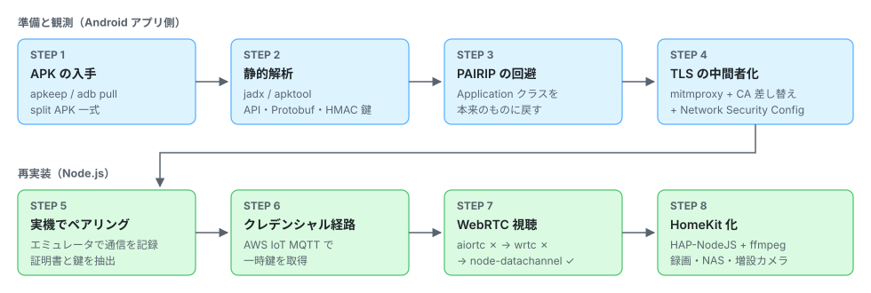
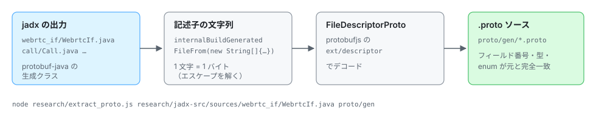
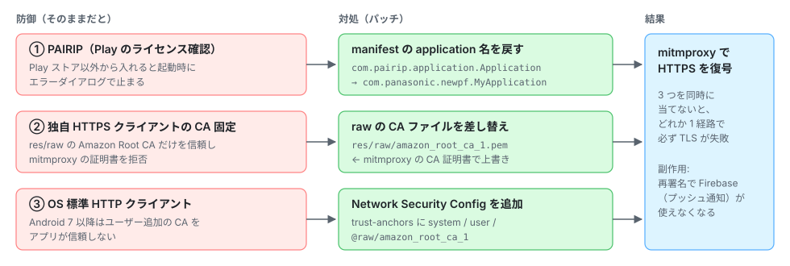

doorphone-hap ドキュメント
ドアホンの解析方法
純正アプリ「ドアホンコネクト S」（Android 版）を手がかりに、VL-X70AH 親機との通信プロトコルをどう調べたかを、 実際に進めた順に説明します。調べた結果をどう実装したかは コードの詳細な説明 を参照してください。
はじめに
- 対象は自分が所有する親機との相互運用です。他人の親機やアカウントに対して行ってはいけません。
- アプリの逆コンパイルや改変は、サービス利用規約に抵触する可能性があります。自己責任で行ってください。
- アプリに埋め込まれた鍵（HMAC 鍵など）や、ペアリングで得た証明書・秘密鍵・ID は公開しないでください。
このドキュメントにも具体的な値は載せていません。
.gitignoreでextracted-state/や*.pem、 逆コンパイル結果（research/jadx-src/など）を除外しています。
全体の流れ
大きく「アプリ側を観測できる状態にする」段階（STEP 1〜4）と、「観測結果をもとに Node.js で再実装する」段階（STEP 5〜8）に分かれます。

基本的な進め方は、静的解析で仮説を立て、実機（親機）で 1 つずつ確かめることの繰り返しです。 アプリのコードだけでは親機側の振る舞い（どの SDP なら映像を送るか、どのフィールドが必須かなど）は分からないので、 最終的には小さな検証スクリプトを親機に当てて確認しました。
使った道具
| 道具 | 用途 |
|---|---|
apkeep / adb pull | APK の入手。 |
jadx | APK を Java ソースに逆コンパイル。読むのはほぼこちら。 |
apktool / zipalign / apksigner | manifest やリソースの改変と再パッケージ・再署名。 |
| Android Emulator（AVD） | 改変したアプリを動かす。-writable-system と adb root でアプリのデータ領域を読める。 |
mitmproxy | アプリの HTTPS 通信を復号して記録。 |
pyjks | アプリのキーストア（BKS）から証明書と秘密鍵を取り出す。 |
zbar / jsQR | 親機の QR コードを写真からデコード。 |
Python（awscrt, aiortc） | 初期の検証用。MQTT は成功、WebRTC は不採用。 |
Node.js（node-datachannel, AWS SDK） | 最終的な実装と、親機に当てる検証スクリプト。 |
ffmpeg / ffprobe | 受信した H264 の確認、フレームの書き出し。 |
STEP 1 APK の入手
Play ストアからインストール済みの端末があれば adb で取り出すのが簡単です。無ければ apkeep で Play ストアから直接ダウンロードします。
どちらも split APK（本体・ABI・言語・解像度別）が複数ファイルで得られます。
# 端末から取り出す
adb shell pm path com.panasonic.doorphoneconnects
adb pull <表示されたパス> ./apks/
# apkeep で取得する（Google アカウントの aas_token が必要）
apkeep -a com.panasonic.doorphoneconnects ./apks/aas_token の入手方法と扱いは research/extract-hmac-key.md にまとめてあります。Google アカウントへの長期アクセス権に相当するので、絶対にコミットしないでください。
STEP 2 静的解析
jadx apks/com.panasonic.doorphoneconnects.apk -d research/jadx-src
apktool d -f -s -o research/apktool-out apks/com.panasonic.doorphoneconnects.apkアプリの構造
- WebView ベースのハイブリッドアプリです。画面は assets 内の HTML / JavaScript で、通信は Kotlin 側（パッケージ
com.panasonic.newpf）が担当します。ネイティブライブラリ（.so）は使っていません。 - 画面と Kotlin の間は
door_phoneという JavaScriptInterface でつながっていて、メソッドはnativeCall(json)とsetCallBackFunc(json)だけです。 画面側は JSON でコマンドを組み立て、Kotlin 側がそれを Protobuf に変換して親機に送ります（ScriptDataInterface.java）。 - 親機との通信は 2 層です。アプリ層は Protobuf の
webrtc_if.WebRtcMessage、トランスポートは AWS Kinesis Video Streams の WebRTC です。
読むべき場所
| 場所（jadx の出力） | 分かること |
|---|---|
com/panasonic/newpf/unit/PairingManager.java | ペアリングの手順。/reg/<token> への GET と、x-auth-hash ヘッダの HMAC-SHA256 計算。鍵は Base64.decode("…") の引数としてハードコードされている。 |
webrtc_if/ 以下（WebrtcIf.java, call/Call.java ほか） | protobuf-java の生成コード。メッセージ定義を丸ごと復元できる（次節）。 |
com/panasonic/newpf/remote/request/RequestManager.java | どのコマンドをどの順で送るか。Request_Connect の組み立てなど。 |
com/panasonic/newpf/external/manager/ | AWS IoT の MQTT。トピック doorphone/comm/<unitId> とコマンド名（GET_SIGNALING_CHANNEL など）。 |
KVS 関連（com/amazonaws/services/kinesisvideo* と呼び出し側） | VIEWER ロールでの接続、GetIceServerConfig の ClientId など。 |
デモ用ユニットの実装（p132q4/g.java など） | 親機なしで UI を動かすための模擬応答。devno が 0 始まりであることなど、親機の応答の形が分かる。 |
HMAC 鍵の探し方は research/extract-hmac-key.md に詳しく書いてあります。見つけた値は /etc/doorphone-hap/hmac.key に 1 行で保存します。
この段階で分かったクラウド側のエンドポイントは次のとおりです。
| ホスト | 用途 |
|---|---|
intercom.iot-webrtc.net | ペアリング登録（/reg/<token>）、バージョン情報など。 |
intercom-auth.iot-webrtc.net | 認証・通知関連。 |
kinesisvideo.ap-northeast-1.amazonaws.com | KVS WebRTC のシグナリング（東京リージョン）。 |
<prefix>-ats.iot.ap-northeast-1.amazonaws.com:8883 | AWS IoT Core の MQTT（mTLS）。 |
Protobuf の復元
最初は Java のアクセサを読みながら .proto を手で書き起こしましたが、型の取り違え（string と bytes）で親機に黙って無視される失敗がありました。
protobuf-java の生成クラスには、.proto をコンパイルした記述子（FileDescriptorProto）がそのまま文字列として埋め込まれているので、
それを取り出せば元の定義を正確に復元できます。

research/extract_proto.js による復元。生成された proto/gen/ を実装でもそのまま使っています。STEP 3 PAIRIP の回避
このアプリは Google Play の PAIRIP（Play Integrity によるライセンス確認）で包まれていて、Play ストア以外からインストールすると
起動時にライセンスエラーのダイアログで止まります。検査は com.pairip.application.Application が attachBaseContext で行っているので、
manifest の application 要素の android:name を本来の Application クラスに戻せば、検査が実行経路から外れます。
apktool d -f -s -o apktool-out apks/com.panasonic.doorphoneconnects.apk
sed -i '' 's/com\.pairip\.application\.Application/com.panasonic.newpf.MyApplication/' \
apktool-out/AndroidManifest.xml
apktool b apktool-out -o apks/base-patched.apk
zipalign -p -f 4 apks/base-patched.apk apks/base-aligned.apk
# split APK もすべて同じ鍵で署名し直す
for f in apks/base-aligned.apk apks/split_*.apk; do
apksigner sign --ks ~/.android/debug.keystore --ks-pass pass:android "$f"
done
adb install-multiple -r apks/base-aligned.apk apks/split_*.apkmanifest に com.pairip.licensecheck.LicenseContentProvider が登録されているアプリでは、それも削除する必要があります（このアプリには無し）。
STEP 4 TLS の中間者化
アプリの HTTPS 通信を mitmproxy で読むには、3 つの防御を同時に外す必要があります。1 つずつ試すと、どれか別の経路で必ず TLS が失敗します。

Network Security Config は次の内容で res/xml/network_security_config.xml に追加し、manifest の application に
android:networkSecurityConfig="@xml/network_security_config" を付けます。
<network-security-config>
<base-config>
<trust-anchors>
<certificates src="system" />
<certificates src="user" />
<certificates src="@raw/amazon_root_ca_1" /> <!-- 中身は mitmproxy の CA -->
</trust-anchors>
</base-config>
</network-security-config>エミュレータ側の設定
- GPU は
-gpu autoで起動します（swiftshader_indirectだと macOS で画面が真っ黒になりました）。 - プロキシは起動オプション
-http-proxyではなく、システム設定で指定します（前者は WebView が白紙になりました）。adb shell settings put global http_proxy 10.0.2.2:8080 - mitmproxy の CA をシステム領域に置く方法（tmpfs で
/system/etc/security/cacerts/などに重ねる）は、SELinux のコンテキストが合わず単独では効きません。上の NSC と組み合わせます。
自前の鍵で署名し直すため、Firebase の API がすべて拒否されます（プッシュ通知が届かない）。ペアリング・映像・Protobuf コマンドなどの中核機能は Firebase を使わないので、解析には影響しません。
STEP 5 実機でペアリング
改変したアプリをエミュレータで動かし、実際の親機とペアリングさせて、その間の通信を記録しました。
QR コードの扱い
親機の「スマホ追加」で表示される QR コードは https://intercom.iot-webrtc.net/reg/<token> という URL で、トークンは 1 回しか使えません。
iPhone のカメラで写すと URL を開くバナーが出て、うっかりタップすると Safari がトークンを消費してしまいます。そこで次のどちらかで読みます。
- 写真として撮り、Mac に送って
zbarでデコードする。sips -s format png IMG_xxxx.HEIC --out qr.png zbarimg --raw qr.png - エミュレータの背面カメラに iPhone（連係カメラ）を割り当て、アプリ自身の QR スキャナで読ませる。
emulator -webcam-list -avd doorphone # webcam1 が iPhone だった emulator -avd doorphone -writable-system -no-snapshot-load -gpu auto -camera-back webcam1
証明書と秘密鍵の取り出し
ペアリングが終わると、アプリは親機が発行したクライアント証明書と秘密鍵を、データ領域のキーストア（AWS IoT SDK の AWSIotKeystoreHelper が作る BKS 形式）に保存します。
adb root で取り出し、pyjks で読みます。キーストアのパスワードはアプリ内の定数で、jadx の出力から分かります。
import jks
ks = jks.bks.BksKeyStore.load("<キーストアファイル>", "<パスワード>")
for alias, e in ks.entries.items(): # alias は unitId
e.decrypt("<パスワード>")
key = e.nested.pkey_pkcs8 # EC P-256 の秘密鍵（PKCS#8）
certs = [c.cert for c in e.nested.cert_chain] # DER の証明書証明書の発行者は Panasonic の独自ルート CA、鍵は EC P-256、有効期限は 50 年でした。Subject は汎用の値（CN=IoT Application…）で、
AWS IoT の「モノ」として設計されていることが分かります。
記録で分かったペアリングの流れ
- QR の URL に HMAC 付きで GET すると、AWS の一時クレデンシャル・
channelName・PeerIdPrefixが返る。 - そのクレデンシャルで KVS に VIEWER として接続し（clientId は
<PeerIdPrefix>-SP_<UUID>）、DataChannel でRequest_Pairingに CSR を載せて送る。 - 親機が
Notify_AnswerPairingで証明書を返す。以後の clientId はSP_<UUID>。
この流れはその後、Node.js で一から再現できることを確かめました（hap/pair.js）。そのとき、csr / client_cert を DER のバイト列で送ると
親機が何も返さず、PEM 文字列にして初めて応答しました。復元した proto でこれらが string 型だったことが手がかりになりました。
STEP 6 クレデンシャル経路
/reg で得られるクレデンシャルは約 10 分で失効し、トークンも 1 回限りです。ペアリング済みのアプリが毎回どうやってクレデンシャルを得ているかが、次の課題でした。
- 最初は AWS IoT の Credential Provider（mTLS の HTTPS エンドポイント）を予想しましたが、mitmproxy には該当する通信が現れませんでした。
- アプリが AWS IoT Device SDK を使っている箇所（
external/manager/）を読むと、MQTT で親機にコマンドを送っていることが分かりました。 MQTT（ポート 8883）は HTTP プロキシを通らないので、mitmproxy には見えていなかったわけです。 - Python（
awscrt）で再現：ペアリングで得た証明書で MQTT に接続し、doorphone/comm/<unitId>にGET_SIGNALING_CHANNELを送ると、親機がNOTIFY_KVS_CREDENTIALで新しいクレデンシャルを返しました（research/get_kvs_creds.py）。 これで QR なしで何度でもクレデンシャルを得られることが確定しました。
STEP 7 WebRTC 視聴
最も時間がかかった段階です。シグナリング（SDP / ICE の交換）は早い段階で通りましたが、映像が 1 フレームも来ない状態が続きました。
| 試したもの | 結果 | 原因・学び |
|---|---|---|
Python aiortc | DTLS まで成立、映像 0 パケット。DataChannel の SCTP が INIT を送り続けて失敗。 | SCTP の実装差と、offer の形が純正アプリと違うことが重なっていた。深追いをやめた。 |
Node @roamhq/wrtc | 親機の answer で映像が inactive。 | このビルドは H264 を扱えず VP8 だけを offer していた。親機は H264 しか送らない。 |
Node node-datachannel | 映像受信に成功。 | offer を純正アプリと同じ形にでき、RTP をそのまま受け取れる（自分でデパケタイズする前提）。 |
映像が来るまでに必要だったこと
mitmproxy で記録した純正アプリの SDP offer と 1 項目ずつ突き合わせ、親機の answer と受信パケット数を見ながら絞り込みました。
- offer の形：音声は
sendrecv（無音でも送り続ける）、映像はrecvonlyで H264（profile-level-id=42e01fなど）を含める。 - DataChannel の向き：親機は自分から
MasterToViewerを開いてくるが、そこに書いたコマンドは無視される。自分で作った DC に送る。 Request_Connectを送る：親機は接続しただけでは映像を送らない。モニター開始の要求が必要。- 引数：最初は名前から
DEVICE_CAMERA, devno=1を送り、REASON_CONNECTION_FAILEDが返った。 玄関子機はDEVICE_DOOR, devno=0、version = VERSION_1も入れる。DEVICE_CAMERAは増設カメラ用だった（後で増設カメラで確認）。 - clientId：KVS の clientId は、ペアリングで登録した
mobileDeviceIdと一致させる。違う ID でも接続はできるが映像は来ない。
受信できた映像は H264 Baseline（pt 101、1280×720）、音声は PCMU 8 kHz でした。ICE は LAN 内のホスト候補どうしで直結し、TURN は使われませんでした。
STEP 8 HomeKit 化
HAP-NodeJS でカメラアクセサリを作り、受信した映像を ffmpeg で HomeKit の SRTP に流しました。ここでも試行錯誤がありました。
- 映像は再エンコードしない：最初は RTP を SDP ファイル経由で ffmpeg に読ませ libx264 で再エンコードしていましたが、iPhone のデコーダが同期を外し続けました。
Node 側でデパケタイズして stdin に H264 を流し、
-c:v copyで詰め直すだけにしたら安定しました。 - 音声が 3 回に 1 回しか聞こえない：ffmpeg の設定を 20 通りほど変えても直らず、go2rtc のソース（
pkg/opus/homekit.go）を読んで、 HomeKit が Opus の RTP タイムスタンプを RFC 7587 ではなく RFC 3550 の流儀で解釈していると分かりました。タイムスタンプを書き換えるため SRTP を自前で実装しました。 - reconfigure：HomeKit のビットレート変更要求のたびに ffmpeg を作り直すと約 27 秒で映像が止まるので、無視するようにしました。
- 常時接続しない：セッションを張り続けると親機に「スマホで使用中」と出て親機のモニターが使えないため、HomeKit のストリーム中だけ接続し、
終わったら
Request_Disconnectを送るようにしました。
追加機能の解析
録画の一覧と取得
復元した proto に Request_GetRecordList や Request_GetFile があったので、Request_Connect を送らないセッションで試しました。
- 手順は
Request_GetRecordControl（操作権の取得）→Request_GetRecordList→Request_ReleaseRecordControl。 Request_GetFileで SD 上のファイル（/media/card/PRIVATE/…/*.MP4）をそのまま読めました。録画は普通の MP4 で、ストリーミング再生の仕組みは不要でした。- 大きな応答は、こちらが次のメッセージを送るまで届かないことがありました。同じ要求を一定間隔で再送する（nudge）と解消しました。
録画の通知（断念）
新しい録画をすぐ NAS に送るため、FCM のプッシュ通知を受ける方法を試しました。APK から Firebase の設定値と署名証明書のハッシュを取り出し、
トークンを取得して Request_SetProfile で親機に登録するところまではできましたが、録画が起きても通知が届きませんでした。最終的に 1 時間ごとのポーリングにしました。
増設カメラ
Request_GetStateの応答にdoor.doors[]（3 枠）とcamera.cameras[]（4 枠）があり、登録済みの枠だけenable: trueと名前が入っていました。- デモ用ユニットの実装で
devnoが 0 始まりであることを確認し、DEVICE_CAMERA, devno=0で増設カメラの映像（H264 Baseline 1280×720）を受信できました。 取り出したフレームが玄関子機と違う画角であることも確認しました。 - 玄関子機とカメラを同時に開くと、両方のセッションが交互に切断されました。同じ clientId のセッションは 1 本しか持てないと判断し、カメラ間で排他するようにしました。
デバッグの進め方
小さな検証スクリプトを親機に当てる
サービス全体を動かすより、確かめたいことだけを行うスクリプトを書くほうが速く確実です。RPi 上では、インストール済みの node_modules にシンボリックリンクを張った作業ディレクトリに
モジュールと検証スクリプトをコピーして、サービス用ユーザーで実行しました。
mkdir /tmp/dptest && ln -s /opt/doorphone-hap/node_modules /tmp/dptest/
# doorphone-source.js などと検証スクリプトをコピーしてから
sudo -u doorphone-hap node /tmp/dptest/probe.js例えば増設カメラの調査では、次のような検証をそれぞれ数十行のスクリプトで行いました。
Request_GetStateを送って応答を JSON で表示する。- 指定した
device/devnoに接続して 20 秒分の H264 を保存し、ffprobeで解像度を見て、ffmpegでフレームを書き出して目で確認する。 - 2 つのカメラを同時に・順番に開いて、状態遷移とパケット数をログに出す。
- 受信した NAL の種類の並び（SPS / PPS / IDR / P）と、IDR の欠損回数を数える。
親機は同時に 1 セッションしか扱えないので、検証中はサービスと取り合わないよう注意します（サービスがアイドルなら問題なし、必要なら一時停止）。
メッセージを読む
DataChannel のメッセージは 16 進でログに出し、proto/gen でデコードして確認します。
node -e "
const {loadTypes} = require('./hap/base-rpc');
const T = loadTypes().WebRtcMessage;
console.log(JSON.stringify(T.toObject(T.decode(Buffer.from(process.argv[1], 'hex')), {enums: String})));
" 08011001aa06140801a2010958026003a201020801a80101b00101落ちたときは
terminate called after throwing an instance of 'std::runtime_error' のようにネイティブ側で落ちた場合、JavaScript のスタックは出ません。
node-datachannel のソース（src/cpp/*.cpp）で例外を JavaScript に変換していない関数を探すのが近道です。
requestKeyframe() がまさにそれで、接続が 2 秒以上かかったときだけ再現する、という条件の絞り込みから見つかりました。
判明した事実の一覧
| 項目 | 内容 |
|---|---|
| ペアリング登録 | GET https://intercom.iot-webrtc.net/reg/<token>、ヘッダ x-auth-hash = Base64(HMAC-SHA256(鍵, token))。トークンは 1 回限り。 |
| 登録の応答 | AWS 一時クレデンシャル（約 10 分）、channelName、PeerIdPrefix、modelType。 |
| 証明書 | EC P-256、Panasonic 独自ルート CA が発行、有効期限 50 年。CSR の Subject は区切り無しで連結した 1 つの CN。 |
| clientId | ペアリング中は <PeerIdPrefix>-SP_<UUID>、以後は SP_<UUID>（= mobileDeviceId）。 |
| クレデンシャル更新 | AWS IoT MQTT（mTLS、8883）。トピック doorphone/comm/<unitId> に GET_SIGNALING_CHANNEL → NOTIFY_KVS_CREDENTIAL。登録解除後は {error: "NOT_REGISTERED"}。 |
| シグナリング | KVS（ap-northeast-1）、SINGLE_MASTER チャネルに VIEWER として接続。親機は常に a=setup:active（こちらが DTLS サーバ）。 |
| メディア | 映像 H264 Baseline（pt 101）1280×720、音声 PCMU 8 kHz。SRTP は AES128_CM_SHA1_80。 |
| DataChannel | 親機が MasterToViewer を開く。コマンドは自分が開いた DC に送る。親機は DCEP ACK を返さない。 |
| モニター開始 | Request_Connect{device, devno, type: MONITOR}、version = VERSION_1。玄関子機 = DEVICE_DOOR、増設カメラ = DEVICE_CAMERA、devno は 0 始まり。 |
| セッション数 | 同じ clientId のセッションは 1 本だけ。2 本張ると交互に切断される。接続中は親機に「スマホで使用中」と表示される。 |
| 機器一覧 | Request_GetState の door.doors[]（3 枠）、camera.cameras[]（4 枠）。 |
| 録画 | GetRecordControl → GetRecordList → GetFile。録画は普通の MP4（H264 + AAC 16 kHz）。モニター接続は不要。 |